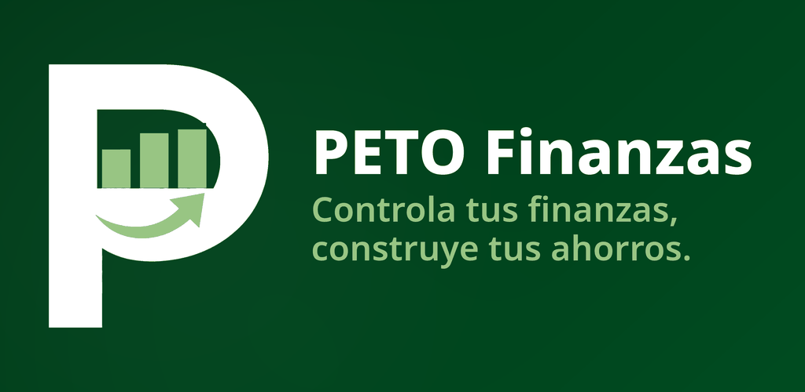

Tu dinero bajo control,
sin complicaciones.
PETO es la app de control de gastos pensada para la vida real: sueldo semanal, pagos fijos, el san con la familia y las deudas que quieres cerrar. Cada día te dice con un solo número cuánto puedes gastar hoy sin pasarte de tu presupuesto.

Gratis. Sin anuncios. Tus datos viajan cifrados y la app funciona en tu teléfono y aquí en la web con la misma cuenta.
Qué hace PETO por ti
«Hoy puedes gastar $X»
Al abrir la app ves un solo número: lo que te queda del mes dividido entre los días que faltan. Si hoy no te pasas, el mes cierra bien.
Presupuestos que se entienden
Reparte tu ingreso por categorías con la regla 25/10/55/10 o ajústala a tu manera. PETO te avisa antes de que una categoría se pase.
Tu san o tanda, en orden
Lleva los turnos, quién ya pagó y cuándo te toca a ti. El ahorro en grupo deja de ser un cuaderno perdido.
Deudas con plan de salida
Registra tus deudas, mira cuánto pagas de intereses y sigue tu avance hasta saldar cada una.
Pagos fijos que no se te olvidan
Renta, teléfono, streaming, el san… PETO te recuerda cada pago antes de que venza, no después de que rebota.
Privado y sincronizado
Entra con tu huella o tu PIN. Con tu cuenta en la nube, lo mismo que anotas en el teléfono lo ves aquí en la web.
Calculadoras gratis
Sin registrarte y sin descargar nada. Haz tus números aquí y, si te gusta, llévalos vivos en PETO.
Calculadora de deudas
Escribe cuánto debes, el interés y tu pago mensual: te decimos en cuántos meses sales y cuánto pagas de intereses.
Calcular mi deudaCalculadora de san / tanda
Aporte, frecuencia y participantes: calcula el fondo de cada turno y el calendario completo de entregas.
Calcular mi sanCalculadora de gasto diario
Tu presupuesto del mes y lo que ya gastaste: descubre cuánto puedes gastar por día sin pasarte.
Calcular mi día🎙️ Finanzas Personales, el podcast
Finanzas Personales — con Lucía y Marco
El podcast en español de la familia PETO: episodios a fondo, de 15 a 25 minutos, con ejemplos y plan paso a paso, con un tema de dinero por día y un paso concreto para aplicarlo hoy mismo. Fondo de emergencia, salir de deudas, auditar suscripciones, subir tu crédito y más, explicado sin palabras raras.
🧪 Prueba PETO antes que nadie
PETO entra en prueba cerrada en Google Play (Android) antes de su lanzamiento. Las plazas son limitadas y participar es gratis: déjanos tu correo y te escribimos en cuanto haya una plaza para ti.